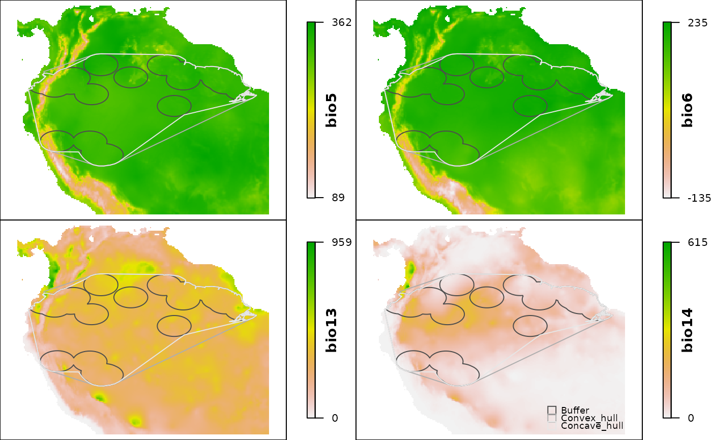

ranges_emaps plots one or more ranges of the same species on various maps of environmental factors (e.g. climatic variables) to detect implications of using one or other type of range regarding the environmental conditions in the areas.
ranges_emaps(..., variables, add_occurrences = FALSE, range_colors = NULL, color_variables = NULL, ranges_legend = TRUE, legend_position = "bottomright", legend_cex = 0.7, zoom = 0.7, verbose = TRUE)
| ... | one or more objects of class |
|---|---|
| variables | a RasterLayer or RasterStack object of environmental variables that will be used as the base for maps. Projection is assumed to be WGS84 (EPSG:4326). Consider that depending on the species range, using more than 9 variables creates a plot that may not fit in an A4 paper sheet. A maximum of 21 variables is allowed, if this limit is surpassed, other variables will be ignored. |
| add_occurrences | (logical) if |
| range_colors | vector of colors for borders of species ranges. If
|
| color_variables | a color palette (a vector of continuous colors generated
by functions like heat.colors). If |
| ranges_legend | (logical) if |
| legend_position | (numeric or character) location where the legend will
be placed in the plot. If numeric, vector of length = 2 indicating x and y
coordinates to position the legend. See details in |
| legend_cex | (numeric) size of the legend with respect to |
| zoom | (numeric) zoom factor when plotting the species range in a map (based on the largest range). Default = 1.3. Larger values will zoom in into the species range and smaller values will zoom out. A value of 0.5 will duplicate the area that the biggest range is covering. |
| verbose | (logical) whether or not to print messages about the process. Default = TRUE. |
A plot showing species ranges on top of maps of environmental variables.
Position of distinct elements depend on the spatial configuration of the species range. Therefore, their position may need to be changed if such elements are needed (e.g., legend). Current character options available for position are: "bottomright", "bottomleft", "topleft", and "topright".
# example data data("buffer_range", package = "rangemap") data("cxhull_range", package = "rangemap") data("cvehull_range", package = "rangemap") vars <- raster::stack(system.file("extdata", "variables.tif", package = "rangemap")) names(vars) <- c("bio5", "bio6", "bio13", "bio14") # plotting ranges_emaps(buffer_range, cxhull_range, cvehull_range, variables = vars)#> Warning: Discarded datum WGS_1984 in Proj4 definition, #> but +towgs84= values preserved